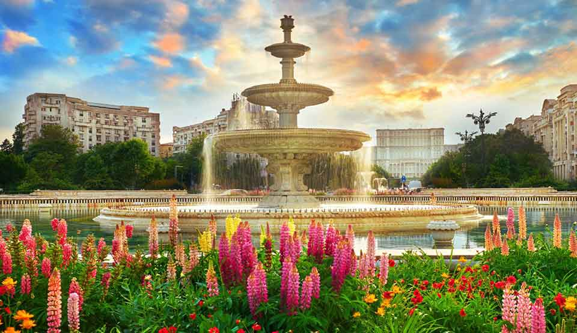
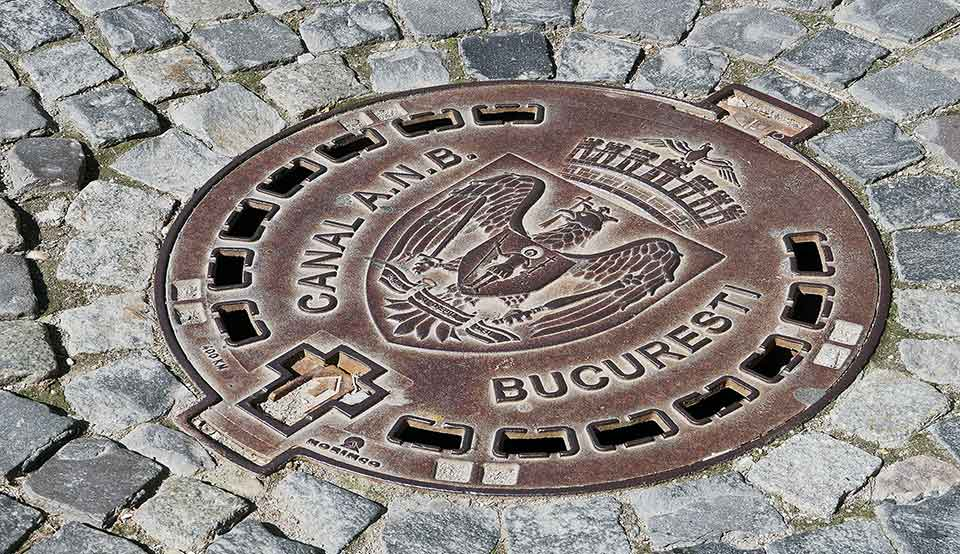
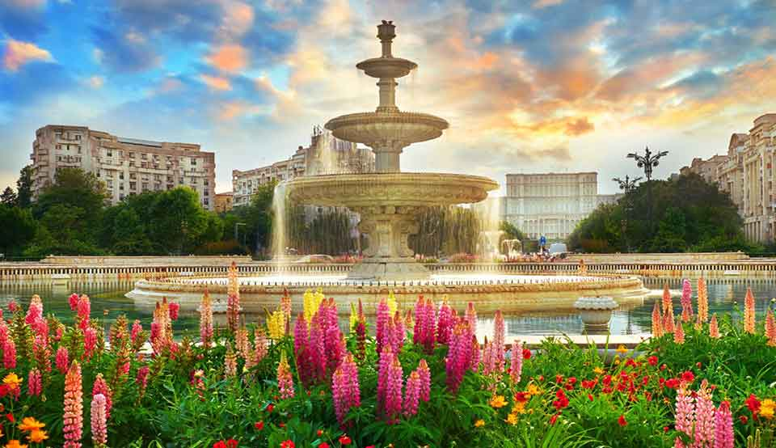
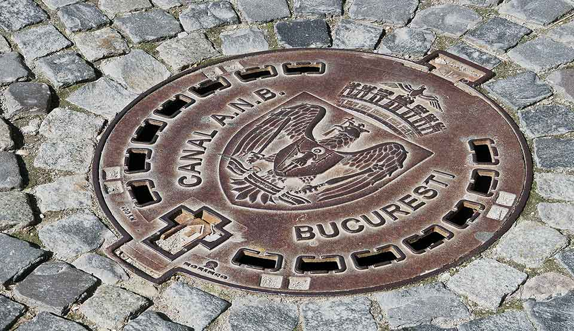
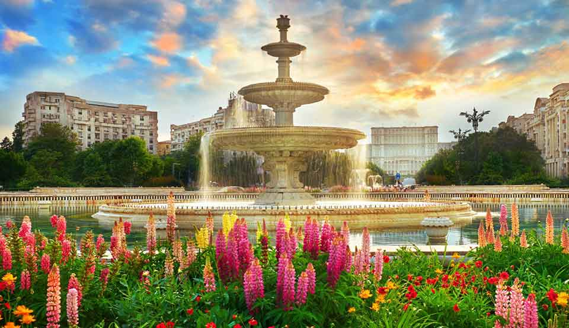
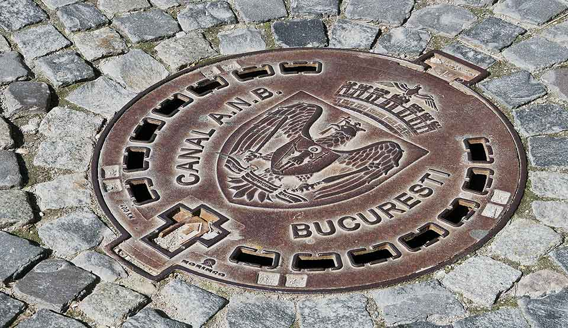

Bucharest Impressions
 



Bucharest is the capital and largest city of Romania, as well as its cultural, industrial, and financial centre. It is located in the southeast of the country on the banks of the Dâmbovița River. Bucharest was first mentioned in documents in 1459. It became the capital of Romania in 1862 and is the centre of Romanian media, culture, and art. Its architecture is a mix of historical (neo-classical), interbellum (Bauhaus and art deco), Nicolae Ceausescu's communist-era and modern. In the period between the two World Wars, the city's elegant architecture and the sophistication of its elite earned Bucharest the nickname of "Little Paris". In 2016, the historical city centre was listed as "endangered" by the World Monuments Watch.
București este capitala României. Este cel mai populat oraș și cel mai important centru industrial și comercial al țării. Bucureștiul să fie al zecelea oraș ca populație din Uniunea Europeană. Prima mențiune a localității apare în 1459. În 1862 devine capitala Principatelor Unite. De atunci a suferit schimbări continue, devenind centrul scenei artistice, culturale și mass-media românești. Arhitectura elegantă și atmosfera sa urbană i-au adus în Belle Époque supranumele de „Micul Paris”. Deși clădirile și cartierele din centrul istoric au fost deteriorate sau distruse de război, cutremure, și programul lui Nicolae Ceausescu de sistematizare, multe au supraviețuit. În ultimii ani, orașul a cunoscut un boom economic și cultural.
WE ARE CURRENTLY LOOKING FOR LOCAL PARTNERS TO GROW AND
EXTEND THIS WEBSITE. IF YOU ARE A QUALIFIED TEAM-PLAYER, DON'T HESITATE TO GET IN TOUCH. LET'S TALK
SUNTEM IN CĂUTARE DE PARTENERI LOCALI, PENTRU A EXTINDE
ACESTUI SITE WEB. DACA ESȚI UN JUCĂTOR DE ECHIPĂ CALIFICAT, NU EZITA SĂ NE CONTACTEZI. HAI SĂ VORBIM!


Bucharest offers countless options for your stay - from budget hostels for backpackers to luxury accomodation for the sophisticated business- and private traveller.
Casa Poporului ("People’s House"), now Palatul Parlamentului (The Palace of the Parliament) is the seat of the Parliament of Romania. Located on Dealul Arsenalului in central Bucharest (Sector 5), it is the second-largest administrative building in the world, after the Pentagon in the United States. With a height of 84 m, an area of 365,000 m2 and a volume of 2,550,000 m3, it is also the fourth largest building in the world, after the Vehicle Assembly Building at Kennedy Space Center in Florida, the Temple of the Feathered Serpent in Teotihuacan, Mexico, and the Pentagon. In terms of weight, the Palace of the Parliament is the heaviest building in the world, weighing in at around 4,098,500 tons. The National Museum of Contemporary Art, the Museum of Communist Totalitarianism founded 2015 and the Museum of the Palace are located on the premesise. Though named the Casa Republicii ("House of the Republic"), after the Romanian Revolution in 1989 it became widely known by its original name Casa Poporului ("People’s House"). Due to its impressive endowments, conferences, symposiums and other events are organised by state institutions and international bodies, but even so about 70% of the building is empty.
Piata Unirii ("Unirii Square") is one of the largest squares in Bucharest and connects to the Casa Poporului ("People’s House") through a large boulevard. The square is the major transport hub, decorated with beautiful fountains, and is very popular in the summer.
Palatul Marii Adunări Naționale ("Palace of the Great National Assembly") the former Chamber of Deputies Palace was finished in 1907, built in neoclassic style by the architect Dimitrie Maimarolu. Sadly it is now (ab-)used as "Patriarchate Palace" by the Orthodox Church.
Grădinile Cișmigiu, Parcul Cișmigiu ("Cișmigiu Gardens, Cișmigiu Park") features an "english" park archtecture and is the oldest attested public park in Bucharest. In summer time visitors can take a beautiful boat trip on the lake, while in the winter season, the whole water surface is turned into a natural ice-skating arena.The National History Museum founded in 1970, holds in its 60 sections numerous items dating from the prehistoric era until present, with a huge archaeological and historical value, all of them found in Romania . Certified as an official Historical Monument it was built at the end of XIX century in neoclassic style with German influences.
The National Romanian Bank Museum holds an important numismatic collection, stating monetary circulation registered on our country territory starting with Vth century.
Șuțu Palace was build in neo-gothic style and hosts today the City of Bucharest Museum with almost 400.000 exponents. The neo-gothic style palace was built between 1833-1835.
The Macca Villacrosse Passage is famous for its yellow glass roof and the horse shoe shaped of the building. The assembly was the headquarter of the first stock market in Bucharest.
Bucharest offers many more historical and contemporary sites to see - we will add more landmarks and details as our site grows...
Subscribe to our Newsletter